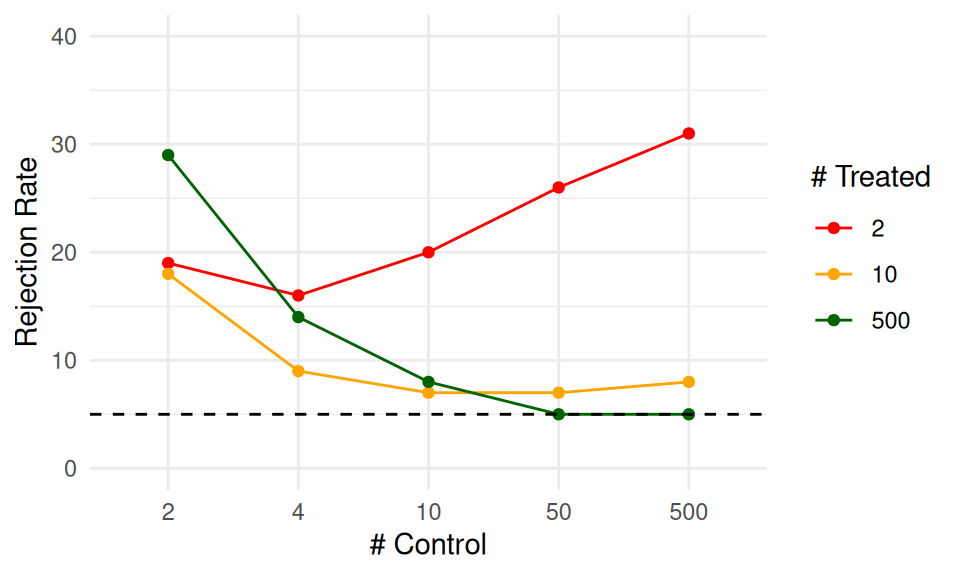
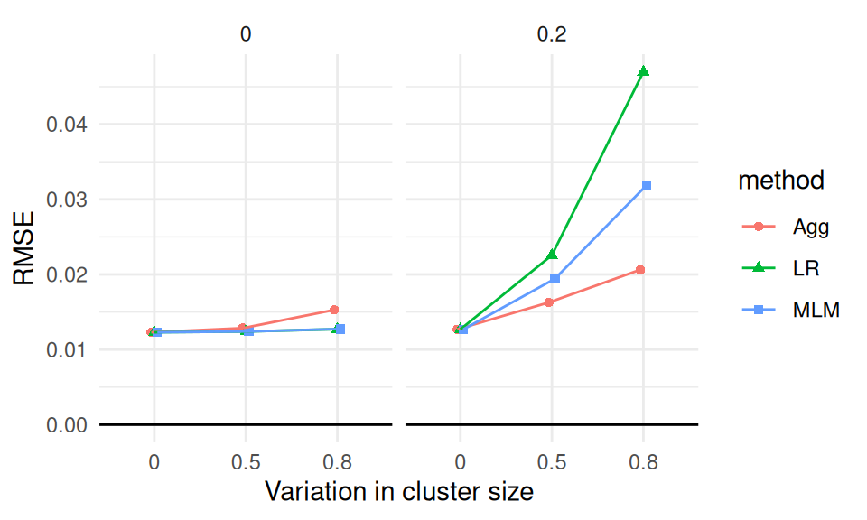
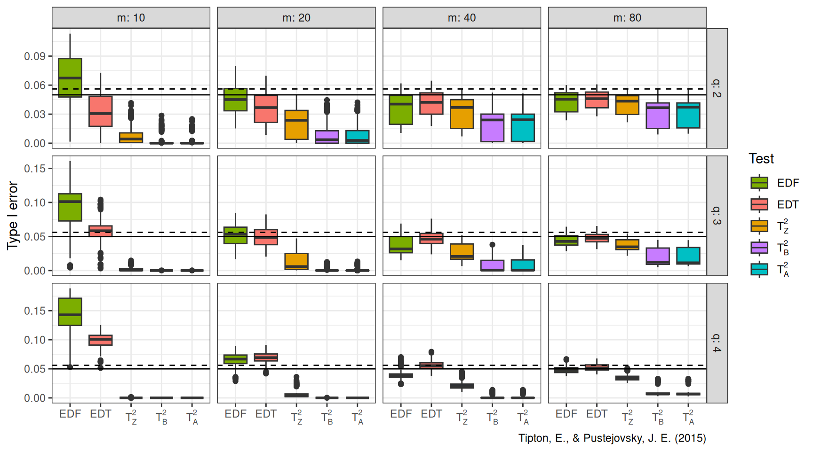
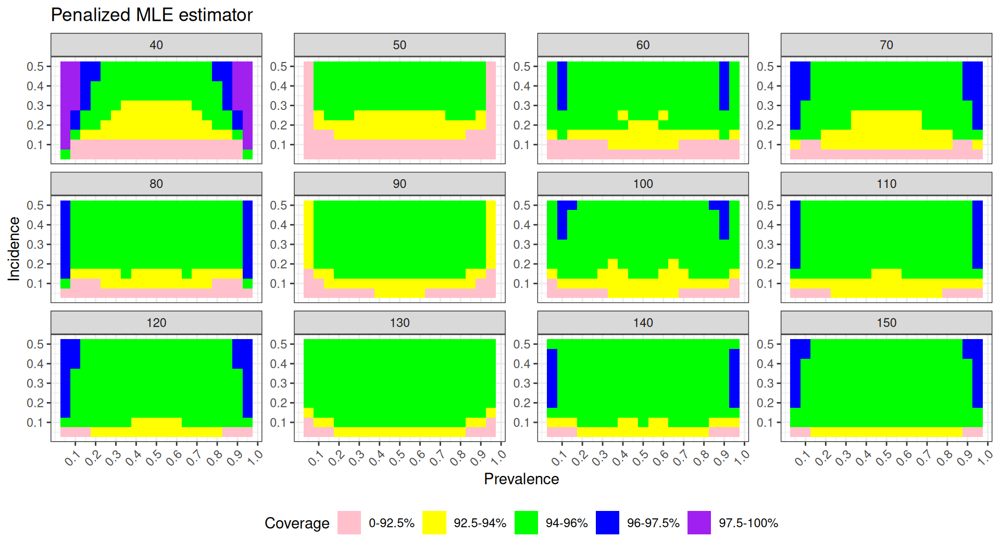
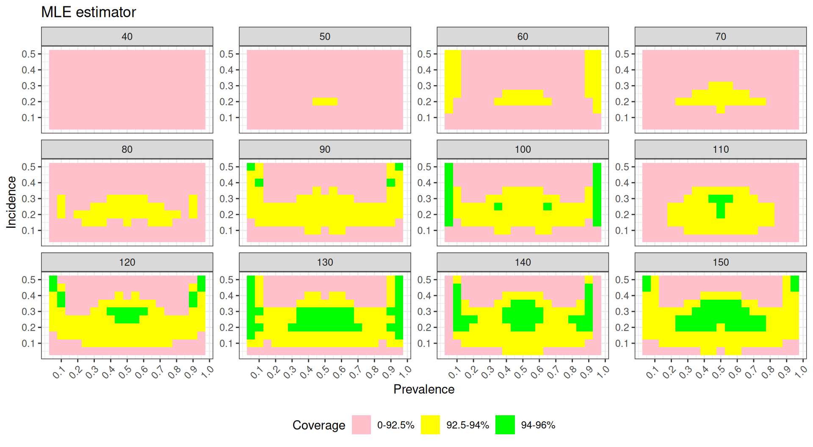
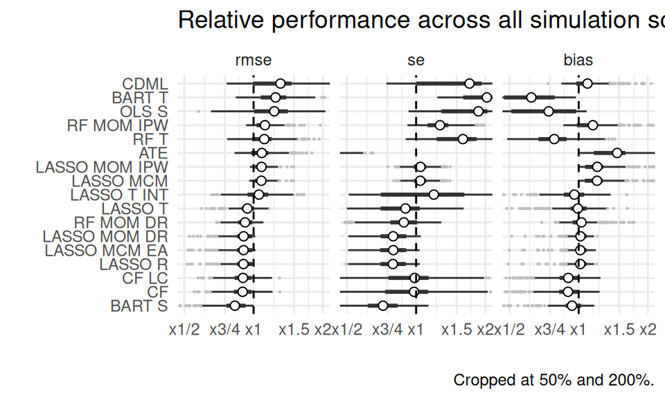
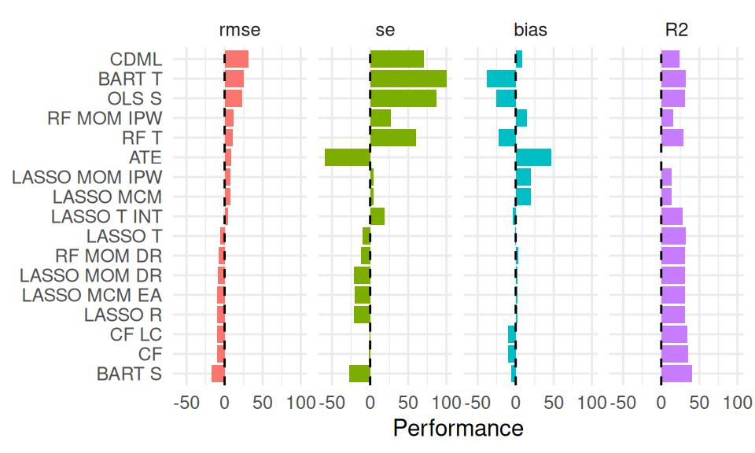

Chapter 11 Exploring and presenting simulation results
Once we have our performance measures for each method examined for each of scenario of our study’s design, the computationally challenging parts of a simulation study are complete, but several intellectually challenging tasks remain. The goal of a simulation study is to provide evidence to address a research question or questions, but performance measures (like numbers more generally) do not analyze themselves. Rather, they require interpretation, analysis, and communication in order to identify findings and broad, potentially generalizable patterns of results that are relevant the research question(s). Good analysis will provide a clear understanding of how one or more of the simulation factors influence key performance measures of interest, the circumstances where a data analysis method works well or breaks down, and—in simulations that examine multiple methods—the conditions where a method performs better or worse than alternatives.
In multi-factor simulations, the major challenge in analyzing simulation results is dealing with the multiplicity and dimensional nature of the results. For instance, in our cluster RCT simulation, we calculated performance metrics in each of 270 different simulation scenarios, which vary along several factors. For each scenario, we calculated a whole suite of performance measures (bias, SE, RMSE, coverage, …), and we have these performance measures for each of three estimation methods under consideration. We organizeed all these results as a table with 810 rows (three rows per simulation scenario, with each row corresponding to a specific method) and one column per performance metric. Navigating all of this can feel somewhat overwhelming. How do we understand trends in this complex, multi-factor data structure?
In this chapter, we survey three main categories of analytic tools that can be used for exploring and presenting simulation results:
- Tabulation
- Visualization
- Modeling
For each category of tools, we describe the logic behind how it can be applied, provide high-level examples drawn from the literature and our own work, and discuss the strengths and limitations of the approach.
In this and subsequent chapters, we assume that you will be sharing the findings from your simulations with an audience beyond yourself. Depending on your context, that might be a broad audience of researchers and data analysts, with whom you will communicate through a scholarly article in a peer-reviewed methodology journal; it might be colleagues who are evaluating your proposal for an empirical study, where the simulations serve to justify the data analysis protocol; it might be a small group of collaborators, who will use the simulations to make decisions about how to design a study; or it might be fellow students of statistics, interested to read a blog post that discusses how a particular model or method works. These contexts differ in the format and level of formality used, but with any of them, you will probably need to create a written explanation of your findings, which summarizes what you found and presents evidence to support your assertions and interpretations. We close the chapter with a discussion about creating such write-ups and distilling your analysis into a set of exhibits for presentation.
11.1 Tabulation
Traditionally, simulation study results are presented in big tables. In general, we believe tables rarely make the take-aways of a simulation readily apparent. Perhaps tables are fine if…
- they involve only a few numbers, and a few targeted comparisons.
- it is important to report exact values for some quantities.
Unfortunately, simulations usually produce lots of numbers and require making many comparisons. You are going to want to show, for example, the relative performance of alternative estimators, or the performance of your estimators under different conditions for the data-generating model. This means a lot of rows, and a lot of dimensions. Tables can do two dimensions; when you try to cram more than that into a table, no one is particularly well served.
Furthermore, in simulation, exact values for your bias/RMSE/type-I error, or whatever, are not usually of interest. And in fact, we rarely have them due to Monte Carlo simulation error. The tables provide a false sense of security, unless you include uncertainty, which clutters your table even further.
Overall, tables and simulations do not particularly well mix. In particular, if you are ever tempted into putting your table in landscape mode to get it to fit on the page, think again. It is often more useful and insightful to present results in graphs (Gelman, Pasarica, and Dodhia 2002).
To illustrate, consider the following table of simulation results showing the false rejection rate, against an \(\alpha\) of \(0.10\), for an estimator of an average treatment impact. We have two factors of interest, the treatment and control group sizes.
| nT | nC | reject |
|---|---|---|
| 2 | 2 | 19 |
| 2 | 4 | 16 |
| 2 | 10 | 20 |
| 2 | 50 | 26 |
| 2 | 500 | 31 |
| 10 | 2 | 18 |
| 10 | 4 | 9 |
| 10 | 10 | 7 |
| 10 | 50 | 7 |
| 10 | 500 | 8 |
| 500 | 2 | 29 |
| 500 | 4 | 14 |
| 500 | 10 | 8 |
| 500 | 50 | 5 |
| 500 | 500 | 5 |
We can see that the rejection rates are often well above 10%, and that if there are few treatment units, the rates are all way too high. Because of the ordering of rows, it is a bit harder to see how the number of control units impacts the rate, and understanding the joint relationship between number of treatment and number of control requires extra thinking. But this is a classic type of table you might see in a paper: the table is a group of tables indexed by one factor, with the second varying within each group.
By contrast, a plot of these exact same numbers (this is an “interaction plot” showing the “interaction” of nT and nC) can make trends much more clear:

Now we immediately see that only if both nC and nT are above 50 do we achieve anything close to valid tests. Even if nC is 500, we are elevated if nT is only 10. When nT is 2, then increasing nC actually increases the rejection rate, meaning larger samples are worse; this is not obvious from looking at the raw table results.
11.1.1 Example: estimators of treatment variation
Tables do have some purpose. For example, tables can be used a bit more effectively to show average performance across a range of simulation scenarios. In general, tables are more plausibly useful for displaying a summary of findings. Do not use them for raw results.
For example, in ongoing work, Miratrix has been studying the performance of a suite of estimators designed to estimate individual treatment effects. To test which estimators perform better or worse than the others, we designed a series of scenarios where we varied the data-generating model by a variety of factors. We then, for each scenario, calculated the relative performance of each estimator to the median of all estimators considered.
We can then ask, do some methods perform better than their peers on average across all scenarios considered? The following table gives an answer to this question: we evaluate each method, averaged across all scenarios, along four metrics: relative bias, relative se, relative rmse, and \(R^2\). To easily see who is good and who is bad, we order the methods from highest average relative RMSE to lowest:
| model | bias | se | rmse | sd_bias | sd_se | sd_rmse | R2 | sd_R2 |
|---|---|---|---|---|---|---|---|---|
| BART S | -6 | -28 | -17 | 13 | 14 | 12 | 0.40 | 0.25 |
| CF | -10 | -2 | -10 | 14 | 34 | 11 | 0.35 | 0.19 |
| CF LC | -10 | -1 | -10 | 14 | 33 | 10 | 0.34 | 0.19 |
| LASSO R | 2 | -21 | -10 | 9 | 13 | 10 | 0.31 | 0.25 |
| LASSO MCM EA | 2 | -20 | -10 | 9 | 13 | 10 | 0.31 | 0.25 |
| LASSO MOM DR | 2 | -21 | -9 | 9 | 13 | 10 | 0.31 | 0.25 |
| RF MOM DR | 3 | -12 | -8 | 15 | 16 | 8 | 0.31 | 0.20 |
| LASSO T | -1 | -10 | -6 | 16 | 23 | 9 | 0.32 | 0.23 |
| LASSO T INT | -4 | 19 | 5 | 16 | 55 | 17 | 0.28 | 0.20 |
| LASSO MCM | 20 | 4 | 8 | 20 | 10 | 8 | 0.14 | 0.15 |
| LASSO MOM IPW | 20 | 4 | 8 | 20 | 10 | 8 | 0.14 | 0.15 |
| ATE | 47 | -60 | 9 | 48 | 7 | 17 | NA | NA |
| RF T | -22 | 60 | 11 | 17 | 48 | 19 | 0.29 | 0.13 |
| RF MOM IPW | 15 | 27 | 12 | 31 | 20 | 13 | 0.16 | 0.12 |
| OLS S | -26 | 87 | 23 | 28 | 83 | 34 | 0.31 | 0.22 |
| BART T | -38 | 103 | 25 | 19 | 54 | 22 | 0.32 | 0.18 |
| CDML | 9 | 71 | 31 | 20 | 99 | 46 | 0.24 | 0.20 |
We are summarizing 324 scenarios. The first columns show relative performance. To calculate these values we, for each method \(m\), performance metric \(Q\), and scenario \(s\), calculate \(P_{ms} = Q_{ms} / median( Q_{ms} )\), and then average the \(P_{ms}\) across the scenarios to get \(\bar{P}_m\). Each method also has an \(R^2_{ms}\) value for each scenario; we simply take the average of these across all scenarios for the penultimate column.
The standard deviation columns show the standard deviation of the performances across the full set of scenarios: they give some sense of how much the relative performance of a method changes from scenario to scenario. Seeing this variation more explicitly might be better done with a visualization; we explore that below.
Overall, the table does give a nice summary of the results, but we still do not feel it makes the results particularly visceral. Visualization can make trends jump out much more clearly. That said, the table is showing four performance measures, one of which (the \(R^2\)) is on a different scale than the others; this is hard to do with a single visualiztion.
So much for tables.
11.2 Visualization
We believe visualization to be the primary vehicle for communicating simulation results. To illustrate some illustration principles, we next present a series of visualizations, illustrating some different themes behind visualization that we believe are important. In the following chapters we talk about how to get to this final point by iteratively refining a series of plots.
11.2.1 Example 0: RMSE in Cluster RCTs
Probably one of the most common visualizations found in the literature would be a line chart showing how a performance metric changes in response to some factor of interest. For example, in our cluster RCT experiment, if we look at just those experiments with average cluster size of \(n=320\), \(J = 80\) clusters, and an ICC of 0, we might have a plot such as the following:
sres_sub <- sres %>%
filter( n_bar == 320, J==80, ICC == 0 )
ggplot( sres_sub, aes( as.factor(alpha), RMSE,
col=method, pch=method, group=method ) ) +
facet_wrap( ~ size_coef ) +
geom_point( position = position_dodge(width = 0.1) ) +
geom_line( position = position_dodge(width = 0.1) ) +
geom_hline( yintercept = 0 ) +
labs( x = "Variation in cluster size", y = "RMSE" ) +
theme_minimal() 
We use multiple plots of a similar form to capture more factors in our simulation. The left facet shows scenarios with no correlation between cluster size and treatment effect, and the right facet shows the case where there is correlation. We jitter the points so the lines are not fully overplotted (linear regression and MLM would otherwise be identical at the left).
Figures such as these clearly show how the estimators are similar or diverge. Here, for instance, we see that, if size correlates with impact, all estimators deteriorate as size variation increases. We also see that even when there is no correlation, the aggregation estimator deteriorates slightly.
For some examples of these sorts of plots, check out the discussion of the importance of simulation in Little (2013), which includes an RMSE figure and a confidence interval converage figure of this type, comparing four estimators of a regression coefficient when using a calibration procedure. Also see Figures 1 and 2 in Antonakis, Bastardoz, and Rönkkö (2021), where they run a simulation to understand what happens when random effect assumptions are ignored in multilevel modeling.
11.2.2 Example 1: Biserial correlation estimation
Our first example, from Pustejovsky (2014), shows the bias of a biserial correlation estimate from an extreme groups design. This simulation was a 4-factor, \(96 \times 2 \times 5 \times 5\) factorial design (factors being true correlation for a range of values, cut-off type, cut-off percentile, and sample size). The correlation, with 96 levels, forms the \(x\)-axis, giving us nice performance curves. We use line type for the sample size, allowing us to easily see how bias collapses as sample size increases. Finally, the facet grid gives our final factors of cut-off type and cut-off percentile. All our factors, and nearly 5000 explored simulation scenarios, are visible in a single plot.

To make this figure, we smoothed the lines with respect to rho using geom_smooth().
Smoothing is a nice tool for taking some of the simulation jitter out of an analysis to show overall trends more directly.
This style of plotting, with a bunch of small plots, is called
“many small multiples” and is beloved by Edward Tufte, who has written extensively on best on information design (see, for example, Tufte and Graves-Morris (1983)).
Tufte likes many small multiples, in part, because in a single plot we can display many different variables: here, our facets are organized by two (p1 and the cut-off approach), and within each facet we have three (our outcome of bias, rho (x-axis), and \(n\) (line type).
We have five variables in total; this means we can fully show all combinations of our factors along with an outcome in a four factor experiment!
11.2.3 Example 2: Variance estimation and Meta-regression
In our next example, from Tipton and Pustejovsky (2015), we explore Type-I error rates of small-sample corrected F-tests based on cluster-robust variance estimation in meta-regression. The simulation aimed to compare 5 different small-sample corrections.
This was another complex experimental design, varying several factors:
- sample size (\(m\))
- dimension of hypothesis (\(q\))
- covariates tested
- degree of model mis-specification

Again using small multiples, we are able to show two of our simulation factors: sample size (\(m\)) and dimension of hypothesis (\(q\)). The \(x\)-axis shows each of our five methods we are comparing. The boxplots are “holding” the other factors, and show the Type-I error rates for the different small-sample corrections across the covariates tested and degree of model misspecification. We add a line at the target 0.05 rejection rate to ease comparison. The reach of the boxes shows how some methods are more or less vulnerable to different types of misspecification. Some estimators (e.g., \(T^2_A\)) are clearly hyper-conservitive, with very low rejection rates. Other methods (e.g., EDF), have a range of very high rejection rates when \(m = 10\); the degree of rejection rate must depend on model mis-specification and number of covariates tested (the things in the boxes).
11.2.4 Example 3: Heat maps of coverage
For data with many levels of two different factors, one option is to use a heat map. For example, the visualization below shows the coverage of parametric bootstrap confidence intervals for momentary time sampling data. In this simulation study the authors were comparing maximum likelihood estimators to posterior mode (penalized likelihood) estimators of prevalence. We have a 2-dimensional parameter space of prevalence (19 levels) by incidence (10 levels). We also have 12 levels of sample size.
The plot shows the combinations of prevalence and incidence as a grid for each sample size level. We break coverage into ranges of interest, with green being “good” (near 95%) and yellow being “close” (92.5% or above). Blue and purple show conservative (above 95%) coverage. For this kind of plotting to work, we need our MCSE to be small enough that our coverage is estimated precisely enough to show structure. We have two plots, one for each of the methods being compared.


For each plot, we can see clear trends, where coverage degrades for low incidence rates. We are wrapping our small multiples by sample size–if you have many levels of a factor you can wrap to show all the levels, which is good, but wrapping does not take advantage of the two-dimensional aspect of having rows and columns of plots (such as we saw with Example 1 and Example 2).
For comparing our two estimators, the prevelance of green in the bottom plot shows generally good behavior for the penalized MLE. The upper plot has less green, showing worse coverage; the improvement of the penalized MLE over the simple MLE is clear. To see this plot in real life, see Pustejovsky and Swan (2015).
11.2.5 Example 4: Relative performance of treatment effect estimators
Revisiting the example of different estimators for estimating treatment variation from the table example above, we can try to plot our results.
As a starting point, we can use the same data we used for the table, and just plot the values as bars (after rescaling R2 by 100 to put it on a similar scale to the other measures):

Now we can more visually see how the trends of performance between the different methods correspond. This plot does not, however, show how variation across scenarios might play out. We can extend this plot by plotting boxplots of the actual performances across all scenarios.
In the plot below, we show the range of relative performances for each estimator vs the median, across the simulations. We again order the methods from highest average RMSE to lowest, and plot the average performance across all the simulations as little circles (these would correspond to the bars, above).
The simulation summarizes performance across 324 scenarios, now showing how much the relative performance can change from scenario to scenario. We truncate extreme values to make the plot more readable and bring focus to central tendencies. We are able to see three performance measures at the same time. The x-axis is on a log scale, again selected to navigate long tails and highlight relative performances. The log scaling also makes the scale of improved performance (less than x1) similar to worse performance (above x1).
We dropped R2 for these plot, since the R2 measure was in percentage points, and, due to estimation uncertainty, included negative values; this was not compatible with the log scaling.
We have lost something in order to gain something; what plot is best will often be a matter of aesthetic opinion.
Pick your plot based on whether it is clearly communicating the message you are trying to get across.
(We could also dive into complex plot management, making an R2 plot and adding it to the right of the above plot; we could do this with plot control packages such as patchwork or cowplot, but we do not do that here.)
11.3 Modeling
Simulations are designed experiments, often with a full factorial structure. The results are datasets in their own right, just as if we had collected data in the wild. We can therefore leverage classic means for analyzing such full factorial experiments. For example, we can regress a performance measure against our factor levels to get the “main effects” of how the different levels impact performance, holding the other levels constant. This type of regression is called a “meta regression” (Kleijnen 1981; Friedman and Pressman 1988; Gilbert and Miratrix 2024), as we are regressing on already processed results. It also has ties to meta analysis (see, e.g., Borenstein et al. 2021), where we look for trends across sets of experiments.
In the language of a full factor experiment, we might be interested in the “main effects” and the “interaction effects.” A main effect is whether, averaging across the other factors in our experiment, a factor of interest systematically impacts performance. When we look at a main effect, the other factors help ensure our main effect is generalizable: if we see a trend when we average over the other varying aspects, then we can state that our finding is relevant across the host of simulation contexts explored, rather than being an idiosyncratic aspect of a specific and narrow context
If we are comparing multiple methods, we would include the method itself as a factor in our regression. Then the estimated main effects for each method will tell us if a method is, on average, higher or lower than the baseline method, averaging across all the simulation scenarios. The main effect of the simulation factors will tell us if that factor impacts the performance measure on average across the methods considered. We might expect, for example, that for all methods the true standard error goes down as sample size increases.
Meta-regressions would also typically include interactions between method and factor, to see if some factors impact different methods differently. They can also include interactions between simulation factors, which allows us to explore how the impact of a factor can matter more or less, depending on other aspects of the context.
11.3.1 Example 1: Biserial, revisited
For example, consider the bias of the biserial correlation estimates from above. Visually, we see that several factors appear to impact bias, but we might want to get a sense of how much. In particular, how much does the population vs sample cutoff option matter for bias, across all the simulation factors considered?
We can use ANOVA to decompose the variation in bias into components predicted by various combinations of the simulation factors. Using ANOVA we can identify which factors have negligible/minor influence on the bias of an estimator, and which factors drive the variation we see. We can then summarise our anova table to see the contribution of the various factors and interactions to the total amount of variation in performance:
| order | source | eta.sq | eta.sq.part |
|---|---|---|---|
| 1 | p1 | 0.21 | 0.77 |
| 1 | fixed | 0.14 | 0.70 |
| 1 | n | 0.12 | 0.67 |
| 1 | rho | 0.02 | 0.26 |
| 2 | p1:n | 0.18 | 0.74 |
| 2 | fixed:n | 0.12 | 0.66 |
| 2 | rho:fixed | 0.03 | 0.33 |
| 2 | rho:n | 0.02 | 0.23 |
| 2 | rho:p1 | 0.02 | 0.20 |
| 2 | p1:fixed | 0.02 | 0.20 |
| 3 | rho:fixed:n | 0.03 | 0.30 |
| 3 | rho:p1:n | 0.01 | 0.18 |
| 3 | p1:fixed:n | 0.01 | 0.17 |
| 3 | rho:p1:fixed | 0.00 | 0.06 |
| 4 | rho:p1:fixed:n | 0.00 | 0.06 |
Here we see which factors are explaining the most variation. E.g., p1 is explaining 21% of the variation in bias across simulations.
The contribution of any of the three- or four-way interactions are fairly minimal, by comparison, and could be dropped to simplify our model.
Modeling summarizes overall trends, and ANOVA allows us to identify what factors are relatively more important for explaining variation in our performance measure. We could fit a regression model or ANOVA model for each performance measure in turn, to understand what drives our results.
11.3.2 Example 2: Comparing methods for cross-classified data
Lee and Pustejovsky (2023) were interested in evaluating how different modeling approaches perform when analyzing cross-classified data structures. To do this they conducted a multi-factor simulation to compare three methods: a method called CCREM, two-way OLS with cluster-robust variance estimation (CRVE), and two-way fixed effects with CRVE. The simulation was complex, involving several factors, so they fit an ANOVA model to understand which factors had the most influence on performance. In particular, they ran four multifactor simulations, each in a different set of conditions. They then used ANOVA to explore how the simulation factors impacted bias within each of these contexts.
One of their tables in the supplementary materials (Table S5.2, see here, page 20, and reproduced below) shows the results of these four ANOVA models, with each column being a simulation context (those being assumptions met, homoscedasticity violated, exogeneity violated, and presence of random slopes), and the rows corresponding to factors manipulated within the simulation. Small, medium, and large effects are marked to make them jump out to the eye.
ANOVA Results on Parameter Bias
| Source | Assumptions | Homoscedasticity | Exogeneity | Rand Slope |
|---|---|---|---|---|
| Method | 0.000 | 0.006 | 0.995 L | 0.000 |
| Effect Size (r) | 0.131 M | 0.008 | 0.020 S | 0.142 L |
| Number of Schools (H) | 0.014 S | 0.113 M | 0.188 L | 0.001 |
| Students per School (J) | 0.016 S | 0.016 S | 0.747 L | 0.110 M |
| IUCC | 0.007 | 0.007 | 0.033 S | 0.073 M |
| method × r | 0.006 | 0.006 | 0.007 | 0.012 S |
| method × H | 0.004 | 0.002 | 0.157 L | 0.000 |
| method × J | 0.002 | 0.000 | 0.878 L | 0.010 S |
| method × IUCC | 0.012 S | 0.003 | 0.037 S | 0.000 |
| r × H | 0.103 M | 0.010 S | 0.059 S | 0.377 L |
| r × J | 0.006 | 0.024 S | 0.008 | 0.051 S |
| r × IUCC | 0.065 M | 0.025 S | 0.084 M | 0.136 M |
| H × J | 0.002 | 0.014 S | 0.062 M | 0.105 M |
| H × IUCC | 0.024 S | 0.008 | 0.034 S | 0.137 M |
| J × IUCC | 0.004 | 0.088 M | 0.013 S | 0.029 S |
Note: (S)mall = .01, (M)edium = .06, (L)arge = .14
We see that when model assumptions are met or only homoscedasticity is violated, choice of method (CCREM, two-way OLS-CRVE, FE-CRVE) has almost no impact on parameter bias (\(\eta^2 = 0.000\) to 0.006). However, under an exogeneity violation, method choice has a large effect (\(\eta^2 = 0.995\)), indicating that some methods (like OLS-CRVE) have much more bias than others. Other factors such as the effect size of the parameter and the number of schools can also show moderate-to-large impacts on bias in several conditions.
The table also shows how an interaction between simulation factors can matter. For example, interactions between method and number of schools, or students per school, can really impact bias under the Exogeniety Violated condition; this means the different methods respond differently as sample size changes.
Overall, the table shows how some aspects of the DGP matter more, and some less.
Using meta regresion can also account for simulation uncertainty in some contexts, which can be especially important when the number of iterations per scenario is low. See Gilbert and Miratrix (2024) for more on this.
11.4 Reporting
The final form of your report will typically For your final write-up, you will not want to present everything. A wall of numbers and observations only serves to pummel the reader. Instead, present selected results that clearly illustrate the main findings from the study, along with anything unusual or anomalous. Your presentation will typically be best served with a few well-chosen figures. Then, in the text of your write-up, you might include a few specific numerical comparisons. Do not include too many of these, and be sure to say why the numerical comparisons you include are important.
To form these final exhibits, you will likely have to generate a wide range of results that show different facets of your simulation. These are for you, and will help you deeply understand what is going on. You then try to simplify the story, in a way that is honest and transparent, by curating this full set of figures to your final ones. Some of the remainder will then become supplementary materials that contain further detail to both enrich your main narrative and demonstrate that you are not hiding anything.
Results are by definition a simplified summary of a complex thing. The alert reader will know this, and will thus be suspicious about what you might have left out. To give a great legitimacy bump to your work, you should also provide reproducible code so others could, if so desired, rerun the simulation and conduct your analysis themselves, or perhaps rerun your simulation under different conditions. Even if no one touches your code, the code’s existence and availability builds confidence. People will naturally think, “if that researcher is so willing to let me see what they actually did, then they must be fairly confident it does not contain too many horrendous mistakes.”